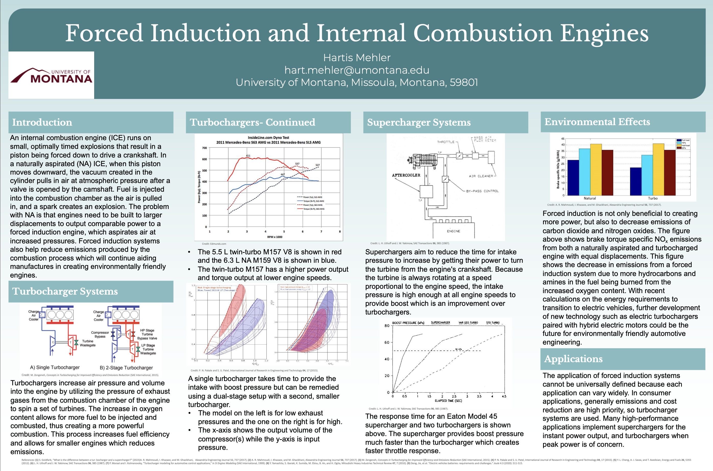

Automotive engineering · Literature review · 2025
Comparing ways to get more air into an engine.
I researched turbochargers, superchargers, and electrically assisted systems, then presented the engineering tradeoffs in a paper and poster.
01 / The question
Which forced-induction approach fits the application?
Compressing intake air can change an engine's power delivery and allow different engine-packaging choices. The useful question is how a system behaves under the operating conditions that matter for a particular vehicle.
02 / What I compared
Response, efficiency, and mechanical complexity.
My review compared exhaust-driven turbocharging, crankshaft-driven supercharging, multi-stage arrangements, and electrically assisted concepts. I examined published discussions of response time, compressor efficiency, packaging, rotating components, and application-dependent tradeoffs.
This was a synthesis of existing research. I did not build or test these induction systems as part of the paper.
03 / The work
Paper and research poster.
The paper contains the full discussion and references. The poster condenses the comparison for presentation.

04 / Context
These PDFs are the coursework versions submitted in 2025. Their technical claims reflect the scope and sources of that assignment; the page above summarizes the comparison without treating a single system as universally best.